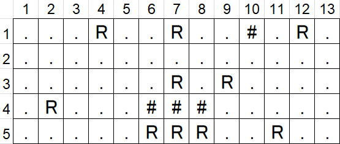

| A - Blade Ranas 2040 |
In a futuristic planet dominated by a superior race of intelligent frogs, Blade Ranas is a special police corps dedicated to eat (or ''retire'') robotic replicant frogs.
The Blade Ranas live in the city of Los Angeles, which can be represented as a rectangular grid of locations. They use their very long tongues to capture and eat the replicants. They can throw their tongues in horizontal, vertical or diagonal directions.
You have to help Blade Ranas find the optimal location of the city to eat the greatest number of replicants.
The city is described as a rectangular grid of locations. In each location, there can be a replicant, an empty space, or a wall. When a Blade Rana is located at a given position, he can eat all the replicants that are in the same horizontal, vertical or diagonal direction, but he can not eat through the walls.
For example, suppose we have the following map of a city, where 'R' represents a replicant, '#' a wall, and '.' is an empty space:

If the frog is located at (1,1), he can eat 2 replicants; at (1,2) he can eat 4 replicants; at (1,7) he can eat 5 replicants (including the replicant which is at (1,7)); at (5,3) he can eat 6 replicants, and also at (5,11); and at (1,10) he can eat 0 replicants, since there is a wall.
You have to find the location to eat the highest number of replicants. If there is more than one solution, you have to produce the first in the order from top to bottom, and then from left to right. So, in the previous example, the solution would be (5,3).
The input can contain several test cases. The number of test cases is indicated in the first line.
Each test case begins with two numbers: R and C, indicating the number of rows and columns of the map, and not bigger than 100. Then, there are R rows, each of them with C characters. Characters can be: '.', 'R', '#', for an empty space, a replicant or a wall, respectively.
For each test case, you have to produce a line with two numbers separated by a blank space: A B, indicating the optimal position, where A is the row, and B is the column. Observe that the top left position is: 1 1
3 5 13 ..R...R..#.R. ............. ......R.R.... .R...###..... .....RRR..R.. 5 13 ..R...R..#.R. ....R.....R.. ......R.R...R .R...###....R ..R..RRR.#R.. 3 3 R.. ### .R.
5 3 3 5 1 1